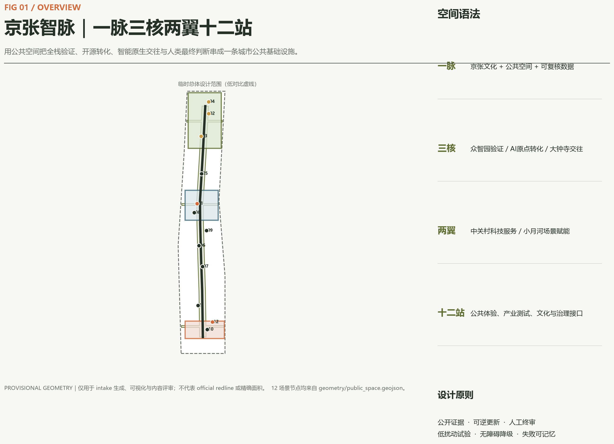
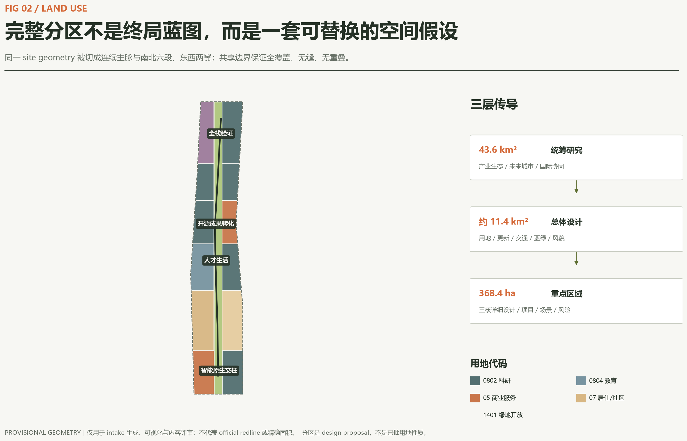
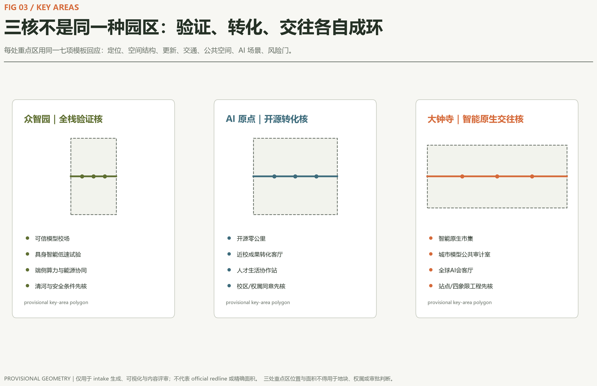
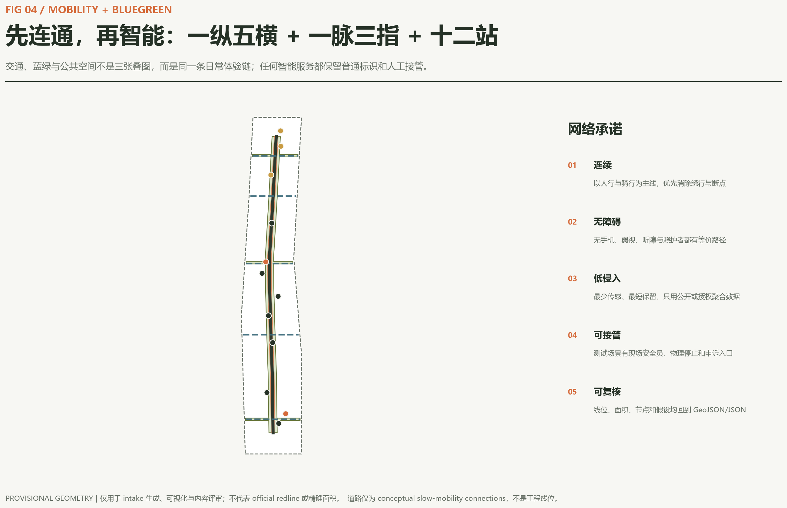
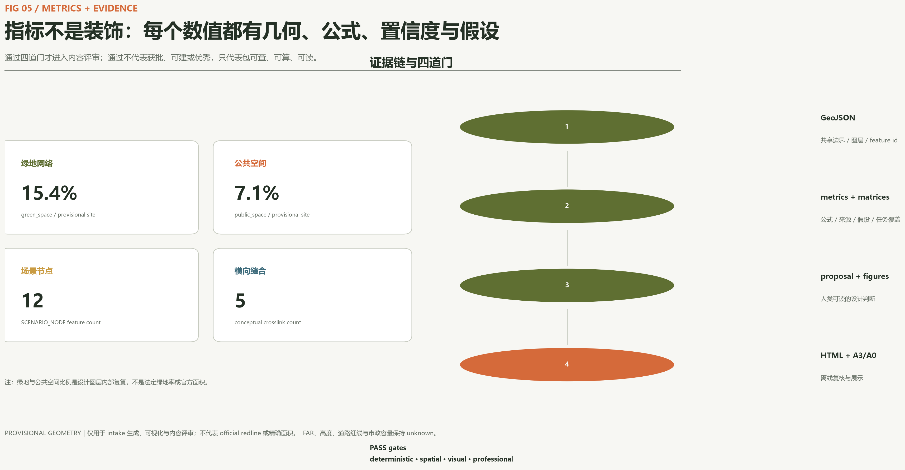

众智园 / 验证核
全栈自主创新、可信评测、具身智能与低碳算力。
- 可信模型校场
- 具身智能低速试验环
- 清河与安全条件先核
一脉三核两翼十二站：京张文化与公共空间是一脉，众智园验证、AI 原点转化、大钟寺交往是三核，中关村科技服务与小月河场景赋能是两翼。AI 只增强人的能力，最终判断仍由人和专业程序完成。
总览地图突出公共主脉、三处重点区域、五条横向缝合、十二个 AI 场景节点和 provisional 状态。权威数据仍是 geometry、metrics 与矩阵。

所有已知值均从提交几何或 feature count 复算；它们用于方案内部一致性，不是法定控制指标。
统筹研究范围负责产业生态和未来城市；总体设计范围负责空间、更新与设施；重点区域负责三核详细设计。用地分区完整覆盖 submitted boundary，但不冒充已批用途。

三处重点区不是同一种园区。每一核都有产业功能、空间动作、建筑更新方法、交通慢行、公共空间、AI 场景与风险门。
全栈自主创新、可信评测、具身智能与低碳算力。
高校策源、开源协作、成果转化与人才生活。
智能原生商务、公共审计、国际会客与城市消费。

先连通，再智能。一纵五横解决南北贯通和东西缝合，蓝绿主脉与公共站点构成日常体验链；智能服务始终有普通标识和人工接管。

十二站覆盖产业测试、公共服务、文化、生态、社区、新业态和治理。三项产业测试明确要求现场接管、授权数据与专业评测。
| 节点 | 空间与任务 | 数据边界 | 人工判断 |
|---|---|---|---|
| 01 开源零公里 | AI 原点 / 贡献记忆 | 自愿提交的版本与许可 | 维护者确认，可撤回 |
| 02 可信模型校场 产业测试 | 众智园 / 模型评测 | 公开测试集或授权数据 | 专业评测员签署 |
| 03 具身智能低速试验环 产业测试 | 众智园 / 机器人验证 | 设备状态与匿名事件 | 安全员接管和物理停止 |
| 04 端侧算力能源站 产业测试 | 众智园 / 新型基础设施 | 能耗与任务队列 | 运维审批，不采个人内容 |
| 05-09 公共与生态节点 | 慢行、无障碍、文化、转化、人才生活 | 公开目录或主动反馈 | 专业审核与线下替代 |
| 10-12 城市交往节点 | 市集、公共审计、全球会客 | 产品说明、模型卡、公开议程 | 场地审核和多角色评议 |
建筑图层是可逆更新载体原型，不是现状测绘或拆除清单。九个更新项目从公共导视、无障碍、开源协作到产业测试逐级建立证据。
补齐建筑用途、结构、安全、产权、能耗、历史价值与使用者意见。
开放首层、共享时段、可逆构件和小尺度试用先于永久建设。
只有在专业比较和公共程序后，才讨论新建或结构性改变。
公告任务、六项 agent 任务、五项强制标准、十五项设计深度和九类图层构成一条可追溯证据链。
